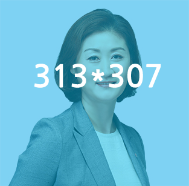
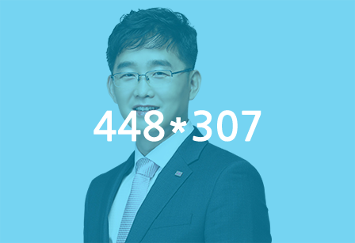

감독 박미희
- 출신교 : 한양대학교
- 경력 : 2006 ~ 2014 KBSN 배구해설위원
2003 ~ 2005 옌볜 과학기술대 체육학 부교수
1990 북경 아시안게임 국가대표 은메달
1988 서울올림픽 국가대표 8위
1984 미국 LA올림픽 국가대표 5위
1983 미도파배구단 입단
1981 멕시코 세계청소년여자선수권대회 우승
(체육훈장 기린장)
1980 아시아청소년배구선수권대회 우승

수석코치 전상훈
- 출신교 : 전북대학교
- 경력 : 2012 수원전산여자고등학교 배구코치
2011 한국도로공사 배구단 수석코치
2010 수원전산여자고등학교 배구코치
2009 목포영화중학교 배구감독
2008 송원여자상업고등학교 배구코치
코치 신동인
- 경력 : 2001 현대건설 여자배구단 코치
2002 경기대학교 배구단 코치
2006 현대건설 여자배구단 코치
2009 국가대표 여자배구단 트레이너
세터코치 이수정
- 경력 : 2015 중앙여자고등학교 배구코치
2014 포항시 체육회 입단
2012 중앙여자고등학교 배구코치
2006 경북체육회 입단
2006 1996 애들란타 올림픽 국가대표
-
트레이너
백재민
-
트레이너
여재기
-
전력분석
김완준